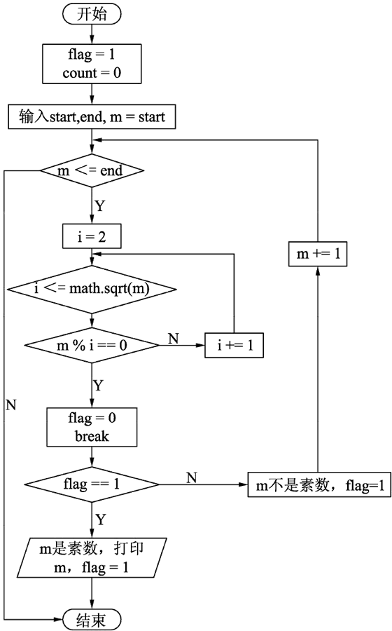

首页 > 编程笔记
Python求素数（带完整源码）
素数指的是只能被 1 和它自身整除的整数。
判定一个整数 m 是否为素数的关键，就是要判定整数m能否能被除1和它自身以外的其他任何整数所整除，若都不能整除，则m为素数。
本题求的是给定范围 start~end 之间的所有素数，考虑到程序的通用性，需要从键盘输入 start 和 end 的值，例如输入 start=1，end=1000，则所编写的程序应能够打印出 1~1000 之间的所有素数。
外层循环对 start~end 之间的每个数进行迭代，逐一检查其是否为素数。外层循环的循环变量用变量 m 表示，m 即代表当前需要进行判断的整数，显然其取值范围为 start≤m≤end。
内层循环稍显复杂，完成的功能是判断当前的 m 是否为素数。设内循环变量为 i，程序设计时 i 从 2开始，一直到 math.sqrt(m)（m 的平方根）为止。用 i 依次去除需要判定的整数 m，如果 m 能够被某一个整数整除，则表示当前的整数 m 不是素数，因此应提前结束该次循环。如果 m 不能被任何一个整数所整除，则可以确定当前的整数 m 为素数。
判定一个整数 m 是否为素数的关键，就是要判定整数m能否能被除1和它自身以外的其他任何整数所整除，若都不能整除，则m为素数。
本题求的是给定范围 start~end 之间的所有素数，考虑到程序的通用性，需要从键盘输入 start 和 end 的值，例如输入 start=1，end=1000，则所编写的程序应能够打印出 1~1000 之间的所有素数。
算法设计
该问题考虑用双层循环结构实现。外层循环对 start~end 之间的每个数进行迭代，逐一检查其是否为素数。外层循环的循环变量用变量 m 表示，m 即代表当前需要进行判断的整数，显然其取值范围为 start≤m≤end。
内层循环稍显复杂，完成的功能是判断当前的 m 是否为素数。设内循环变量为 i，程序设计时 i 从 2开始，一直到 math.sqrt(m)（m 的平方根）为止。用 i 依次去除需要判定的整数 m，如果 m 能够被某一个整数整除，则表示当前的整数 m 不是素数，因此应提前结束该次循环。如果 m 不能被任何一个整数所整除，则可以确定当前的整数 m 为素数。
我们可以使用标志位 flag 来监控内外循环执行的情况。在定义变量时将 flag 初值设为 1，在内层循环中判断时，如果m能够被某个整数整除，则在内循环中将flag设置为0，反之则不修改 flag 的值。在外循环中对 flag 的值进行判断，如果 flag=0，则显然当前的 m 不是素数，如果 flag=1，则当前的 m 是素数，应该将其打印出来。注意，遍历范围之所以不是[2,m]，而是 [2, math.sqrt(m)]，是凭借了一个数学定理：如果 m 不是素数，则 m 必有满足 1<i≤math.sqrt(m) 的一个因子 i 存在。
确定程序框架
程序的流程图如下图所示。

完整的程序
根据上面的分析，编写程序如下：
import math
if __name__ == "__main__":
flag = 1
count = 0
print("请输入一个整数范围(start-end): ")
start = int(input("start = "))
end = int(input("end = "))
while not (start>0 and start<end): #判断输入范围是否正确
print("输入的参数有误，请重新输入：" )
start = int(input("start = "))
end = int(input("end = "))
print("%d 和 %d 之间的素数有：" %(start, end)) # 外层循环，对start~end之间的每个数进行迭代，检查是否为素数
m = start
while m <= end:
k = math.sqrt(m) # 求m的平方根
i = 2
while i <= k: # 内层循环，判断2~k之间的每个数是否能被m整除
if m % i == 0: # 若存在一个数能被m整除，则跳出内层循环
flag = 0
break
i += 1
if flag == 1: # 如果flag == 1，则当前的m为素数
print("%-4d" %m, end="")
count += 1
if count % 15 == 0: # 每15个素数换一行
print()
flag = 1
m += 1
print("\n%d 到 %d之间共有：%d 个素数" %(start, end, count))
运行结果为：
请输入一个整数范围(start-end): start = 1 end = 1000 1 和 1000 之间的素数有： 1 2 3 5 7 11 13 17 19 23 29 31 37 41 43 47 53 59 61 67 71 73 79 83 89 97 101 103 107 109 113 127 131 137 139 149 151 157 163 167 173 179 181 191 193 197 199 211 223 227 229 233 239 241 251 257 263 269 271 277 281 283 293 307 311 313 317 331 337 347 349 353 359 367 373 379 383 389 397 401 409 419 421 431 433 439 443 449 457 461 463 467 479 487 491 499 503 509 521 523 541 547 557 563 569 571 577 587 593 599 601 607 613 617 619 631 641 643 647 653 659 661 673 677 683 691 701 709 719 727 733 739 743 751 757 761 769 773 787 797 809 811 821 823 827 829 839 853 857 859 863 877 881 883 887 907 911 919 929 937 941 947 953 967 971 977 983 991 997 1 到 1000之间共有：169 个素数
关注公众号「站长严长生」，在手机上阅读所有教程，随时随地都能学习。内含一款搜索神器，免费下载全网书籍和视频。

微信扫码关注公众号